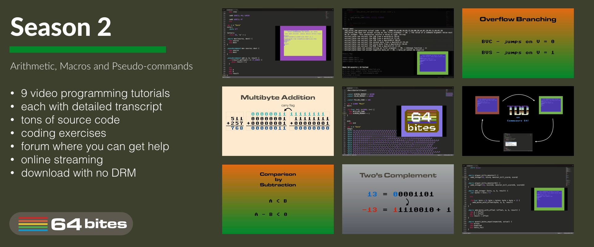
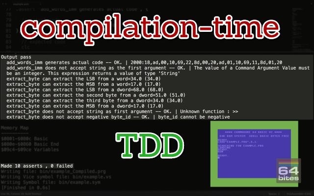
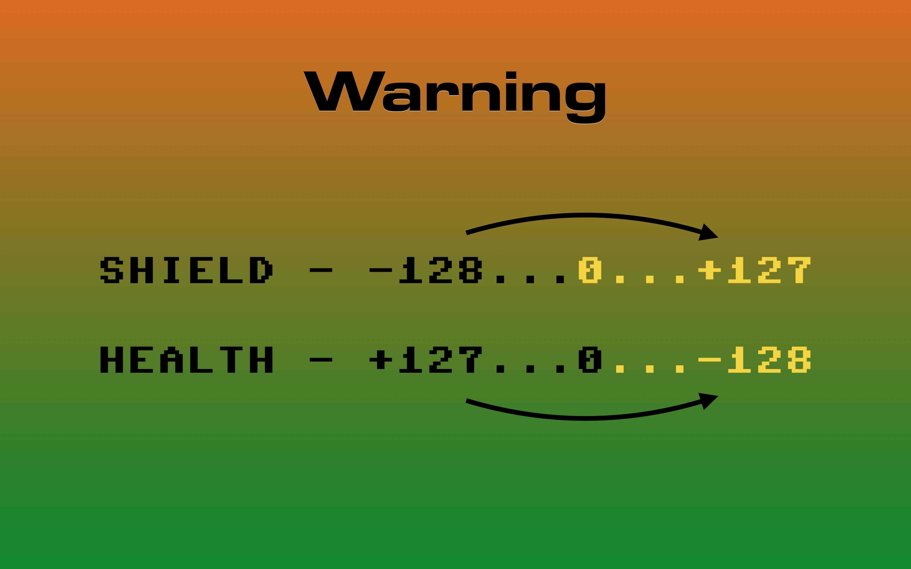
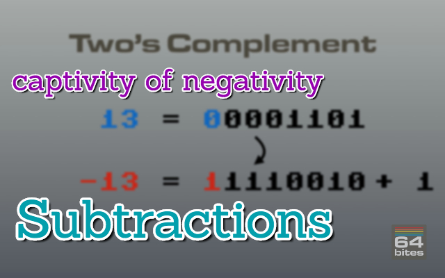

Episode #012 - Decisions
Did you know you can use the carry flag to signify an overflow in unsigned integer operations. But wait, there's more. We also have other flags like V, or N and we can use them to make decisions in our programs.Watch the video
Download show notes
Click on the button below to get the full transcript, source code and programming exercises.
This way you follow along while watching the episode.
You will not only understand what is happening but also code everything yourself!
Download show notesBy the way. This episode is part of a Season 2. So you can get it in a bundle with 8 other episodes.
You can read more about that below
Season 2 - Arithmetic, Macros and Pseudocommands
Here's what you'll get:
- 9 videos (40+ minutes in total)
- transcripts (11000+ words)
- source code examples (4500+ LOC)
- access to 64bitesVIP Facebook group, where you can get help
- plenty of exercises to solve on your own
- online streaming
- download with no DRM
- one time payment (no monthly/annual fees)
You WILL learn following in Assembly:
- How to ADD 8, 16, or 32-bit bit numbers with or without carry
- Different ways of representing negative numbers in binary
- Why subtraction is just an addition in disguise
- All of that explained in examples based on situations found in computer games
- How BNE, BVC, BCS and others can be used to make decisions in your programs
- Compare numbers with CMP and SBC, and why it's not that simple.
- How to create and use a small TDD framework with macros in Assembly
- Make it even better with pseudo-commands
- What are the Compilation-Time Metaprograming techniques in KickAssembler
- How to use them for Compilation-Time TDD
- Creating loops, unrolling them and making the self-modifying code
All Episodes in this Season

Episode #018 - Pseudo Commands
Today we'll learn about .pseudocommand directive in KickAssembler. It allows us to make more robust macros that can work with different addressing modes and behave like a built in assembly instructions.
Episode #017 - Loops in Assembly
In which we will learn about absolute indexed mode to access memory sequentially. We will also create self-modyfing code. On top of that we will figure out how and why should we use loop unrolling. 
Episode #016 - Compile Time TDD
On top of being awesome, KickAssembler's scripting language has two simple but powerful directives - .assert and .asserterror.We can use both to do compile-time Test Driven Development, and make sure our functions work and macros generate valid code.

Episode #015 - Metaprogramming
The KickAssembler has one exclusive feature that allows for really powerful compile-time metaprogramming. It has a built-in programming language that can be used to generate assembly.In this episode we'll see how we can use it to make our code cleaner and more robust.

Episode #014 - TDD with Macros
Have you ever thought of doing Test Driven Development on Commodore 64?It's not only possible, but surprisingly simple and rewarding. In this episode, with the help of macros, we'll build a very minimal testing framework and use it to test-drive our code.

Episode #013 - Comparisons
In this episode we'll learn the remaining Z flag along with it's BEQ and BNE instructions. We'll also try to compare arbitrary numbers using subtraction and CMP command, which only seems to be straightforward. 
Episode #012 - Decisions
Did you know you can use the carry flag to signify an overflow in unsigned integer operations. But wait, there's more. We also have other flags like V, or N and we can use them to make decisions in our programs. 
Episode #011 - Captivity of Negativity
This one teaches not only how to subtract numbers on Commodore 64. It also shows different ways of representing negative numbers in binary and explains reasons why borrow in subtraction is defined as 1 - carry.